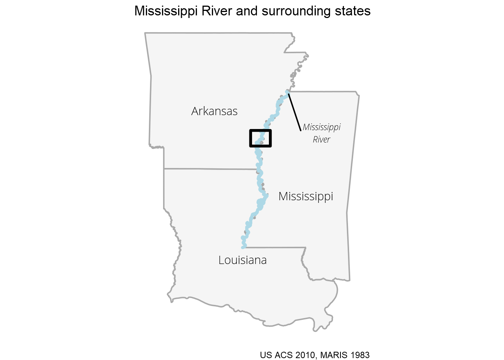

Liz Roten
Fisk's 'Mississippi River Meander' in R
Background
Those of us even mildly obsessed with maps will be familiar with Harold Fisk’s 1944 series documenting the historic travel of the Mississippi River in Mississippi River Alluvial Valley. In my house in college, filled with geography majors and map enthusiasts, we had a small print hung on the wall, and it was easy to start reading it, and end up standing there, just staring, for quite a while.
Even viewing on a screen, its easy to see how you can get lost in the map. The colors are distinct and vivid, and the contextual information, like political boundaries and fault lines, against the aged sepia base do not distract. The map is dynamic, with irregular shapes and curves. If not done right, the messiness could overwhelm the viewer, but Fisk succeeds in capturing the audience’s attention. The content itself makes you reconsider your relationship with this body of water. Seeing how it has moved and changed course over time reminds you of how small, short and insignificant our lives can be compared to the Earth’s natural history.

“Alluvial Valley of the Lower Mississippi River by Harold Fisk, 1944” courtesy of Radical Cartography
I adore this map. I won’t attempt to fully recreate it here, but I want to explore the data behind it, and see what I can find.
Prep
Lets load in packages I know I’ll need.
library(rgdal)
library(dplyr)
library(sf)
library(ggplot2)
library(leaflet)
library(xml2)
library(data.table)
library(raster)
library(ggrepel)
library(stringr)
library(ggmap)
library(tidycensus)
library(cowplot)To start, I studied the map and did an inventory of the elements.
- State lines
- Elevation
- Mississippi River
- Rivers other than the Mississippi
- County lines
- Cut offs (neck, chute, and fault)
- Lakes
- Major landmarks
- Flood areas
- Much more!
I was having difficulty working with raster elevation data, so I decided to save that for another day. However, there is a dataset from a 1994 study by Roger T. Saucier, “Geomorphology and Quaternary Geologic History of the Lower Mississippi Valley, Volumes I and II.” The United States Geological Survey (USGS) developed both georeferenced plates and vector shapefiles. I downloaded both the datasets from the USGS website.
Data cleaning
I downloaded the zipped shapefile, so here I unzip the folder, read in the shapefile, and convert it to an sf object.
unzip("data/gis/Saucier_Geomorph_shapefile.zip", exdir = "data/gis")
saucier <- readOGR("data/gis/Saucier_Geomorph_shapefile/Saucier_Geomorph.shp") %>%
st_as_sf() %>%
sf::st_transform("+proj=longlat +ellps=WGS84 +datum=WGS84 +no_defs")We can get a quick idea of what the data looks like with names() and a simple ggplot.
names(saucier)## [1] "Formation" "Descrip" "Geo_Age" "geometry"ggplot() +
geom_sf(data = saucier,
aes(fill = Geo_Age),
color = NA) +
labs(fill = "Geologic Age") +
scale_fill_brewer(type = "qual", palette = "Accent") +
theme_minimal()Included in the zipped download is an XML metadata file. I can parse it (with some trial and error) to get Formation and Geo_Age descriptions.
meta_xml <- read_xml("data/gis/Saucier_Geomorph_shapefile/Saucier_Geomorph_FGDC.xml")We can then take the XML document and manipulate it into a table with only the attributes we need.
item <- xml_find_all(meta_xml, "//edomv") %>% xml_text() %>% factor()
item_desc <- xml_find_all(meta_xml, "//edomvd") %>% xml_text() %>% as.character()
meta_table <- data.table::data.table(item, item_desc) %>%
unique() %>%
filter(nchar(item_desc) > 14)
DT::datatable(meta_table,
rownames = FALSE,
colnames = c("Formation/Geo_Age",
"description"))To keep everything straight, I join this table with our sf object.
saucier_meta <- saucier %>%
dplyr::left_join(meta_table, by = c("Formation" = "item")) %>%
dplyr::left_join(meta_table, by = c("Geo_Age" = "item")) %>%
dplyr::select(-item_desc.x) %>%
st_as_sf()I also downloaded a recent shapefile of the Mississippi River in the state of Mississippi.
ms_r_1983 <- readOGR("data/gis/ms_r/ms_r.shp") %>%
st_as_sf() %>%
sf::st_transform("+proj=longlat +ellps=WGS84 +datum=WGS84 +no_defs")I then saved my own gggplot2 theme object and a few colors. Notice that I establish the font sizes all in one place, which makes it much easier to make small adjustments that will affect multiple aspects. I adjusted this theme frequently as I went along (I didn‚Äôt magically find all the right adjustments in one shot üòâ).
library(showtext)
showtext_auto()
file <- sysfonts::font_files()
font_add("Lato", "Lato-Regular.ttf")
font_add("Open Sans Light", "OpenSans-Light.ttf")
font_add("Open Sans Light Italic", "OpenSans-LightItalic.ttf")
font_add("PT Sans", "PTSans-Regular.ttf")
font_add("PT Serif", "PTSerif-Regular.ttf")
## font sizes --------------------------------------------
size_header <- 14
size_axis_title <- 12
size_legend_title <- 12
size_axis_text <- 8
size_legend_text <- 8
size_caption <- 6
## color -------------------------------------------------
background_color <- "white"
my_colors <- c(
"#9BABBF",
"#8C694A",
"#6C733C",
"#D9B991"
)
## theme function -----------------------------------------
my_theme <- function(...) {
theme_void() +
theme(
### plot and panel-----------------------------------
plot.background = element_rect(
fill = background_color,
linetype = 0,
colour = NA
),
panel.background = element_rect(
fill = background_color,
linetype = 0,
color = NA
),
panel.grid = element_blank(),
# plot.margin = unit(c(.5, .5, .2, .5), "cm"),
panel.border = element_blank(),
### title and caption -------------------------------
title = element_text(family = "PT Serif",
size = size_header),
plot.caption = element_text(size = size_caption),
### axis and strip text ------------------------------
strip.text = element_blank(),
axis.title = element_text(size = size_axis_title),
axis.text = element_text(size = size_axis_text),
## legend text ----------------------------------------
legend.position = "right",
legend.text = element_text(
family = "Open Sans Light",
size = size_legend_text
)
)
}Explore geological ages and formations
Holocene is our current geological epoch. The alluvial valley (or alluvial plain) is created by sediment deposits over the millenia. The soil deposits show where the Mississippi’s floodplain has been over time.
saucier_holocene <- saucier_meta %>% # all holocene features
filter(Geo_Age == "Holocene")
saucier_holocene_alluvial <- saucier_meta %>% # holocene alluvial valley
filter(Geo_Age == "Holocene (Alluvial Valley)",
Formation %in% c("Hchm", "Hcom", "Had",
"Ppch",
"Pdch"))
ggplot() +
geom_sf(data = saucier_holocene_alluvial,
aes(fill = Formation),
color = NA) +
geom_sf(data = saucier_holocene,
color = "#0066ff") +
labs(title = "Mississippi River",
subtitle = "Holocene and Alluvial Valley",
caption = "USGS 2018") +
my_theme() +
theme(axis.text = element_blank())Next, the Pleistocene (aka, the Ice Age). The pleistocene was around 2 million to 11 million years ago.
saucier_pleistocene <- saucier_meta %>%
filter(Geo_Age == "Pleistocene",
Formation %in% c("Hchm", "Hcom", "Had",
"Ppch", "Pdch"))I picked out an area to focus on, so I can make a SpatialPolygons object to clip the other data to.
e2 <- as(raster::extent(-91.2678, -90.7281,
33.596, 34.25), "SpatialPolygons")
proj4string(e2) <- "+proj=longlat +ellps=WGS84 +datum=WGS84 +no_defs"Clip data to close area.
saucier_holocene_alluvial_close <- st_intersection(saucier_holocene_alluvial,
st_as_sf(e2))
saucier_holocene_close <- st_intersection(saucier_holocene,
st_as_sf(e2))
saucier_pleistocene_close <- st_intersection(saucier_pleistocene,
st_as_sf(e2))
ms_r_close <- st_intersection(ms_r_1983, st_as_sf(e2))We can take these close-ups and add a couple text labels with geom_text_repel() from ggrepel.
ggplot() +
geom_sf(data = saucier_holocene_alluvial_close,
color = NA,
fill = "#b97f74") +
geom_text_repel(data = saucier_holocene_alluvial_close[2,],
aes(geometry = geometry),
stat = "sf_coordinates",
nudge_x = -0.1,
nudge_y = 0.2,
label = str_wrap("Abandoned channels and courses",
width = 15),
family = "Open Sans Light Italic",
size = 3
) +
scale_fill_brewer(type = "qual") +
geom_sf(data = saucier_holocene_close,
fill = "#e4d5b6",
color = NA) +
geom_text_repel(data = saucier_holocene_close[1,],
aes(geometry = geometry),
stat = "sf_coordinates",
nudge_x = -0.1,
nudge_y = 0.2,
label = str_wrap("Historical river track",
width = 15),
family = "Open Sans Light Italic",
size = 3
) +
geom_sf(data = ms_r_close,
inherit.aes = FALSE,
fill = "#9fa066",
color = NA) +
labs(title = "Mississippi River",
subtitle = "Holocene Alluvial Valley",
caption = paste0("USGS 2018, MARIS 1983")) +
my_theme() +
theme(
axis.text = element_blank(),
axis.title = element_blank())Lets zoom in even closer, and add in a basemap to get some of those features in the original map with get_stamenmap() from ggmap.
base <- ggmap::get_stamenmap(bbox = c(-91.4, 33.6, -90.8, 34.0),
maptype = "terrain-lines",
messaging = FALSE, zoom = 12) %>%
ggmap()
latit <- base$data$lat
long <- base$data$lon
coords <- matrix(c(latit, long),nrow = 4)
p <- Polygon(coords = coords)
ps <- Polygons(list(p), 1)
sps <- SpatialPolygons(list(ps)) %>%
st_as_sf() %>%
sf::st_set_crs("+proj=longlat +ellps=WGS84 +datum=WGS84 +no_defs")
poly <- as(raster::extent(-91.4, -90.8, 33.6, 34.0), "SpatialPolygons") %>%
st_as_sf() %>%
sf::st_set_crs("+proj=longlat +ellps=WGS84 +datum=WGS84 +no_defs")
base +
geom_sf(data = saucier_holocene_alluvial_close,
color = NA, inherit.aes = FALSE,
fill = "#b97f74") +
geom_sf(data = saucier_holocene_close,
fill = "#e4d5b6",
inherit.aes = FALSE,
color = NA,) +
geom_sf(data = saucier_pleistocene,
inherit.aes = FALSE,
fill = "green") +
geom_sf(data = ms_r_1983,
inherit.aes = FALSE,
fill = "#9fa066",
color = NA) +
labs(title = "Mississippi River and Alluvial Valley",
fill = "Formation Description",
caption = paste0("USGS 2018, MARIS 1983", "\n",
"Basemap: Stamen", "\n",
"Liz Roten")) +
my_theme() +
theme(axis.title = element_blank(),
plot.caption = element_text(size = 6))Wisconsin glaciation
The Wisconsin Glacial Episode was the most recent glacial period.
saucier_holocene_alluvial_closer <- st_intersection(saucier_holocene_alluvial, st_as_sf(poly))
saucier_holocene_closer <- st_intersection(saucier_holocene,
st_as_sf(poly))
saucier_pleistocene_closer <- st_intersection(saucier,
st_as_sf(poly)) %>%
filter(Geo_Age == "Pleistocene")
saucier_closer <- st_intersection(saucier,
st_as_sf(poly))
ms_r_closer <- st_intersection(ms_r_1983,
st_as_sf(poly))
primary <- ggplot() +
geom_sf(data = saucier_pleistocene_closer,
color = NA, inherit.aes = FALSE,
aes(fill = Formation)) +
scale_fill_manual(values = c("#8d977c",
"#716b2f",
"#bea85d"),
labels = c("Prairie Complex",
"Early Wisconsin",
"Late Wisconsin")) +
geom_sf(data = saucier_holocene_alluvial_closer,
color = NA, inherit.aes = FALSE,
fill = "#b97f74") +
geom_sf(data = saucier_holocene_closer,
fill = "#e4d5b6",
inherit.aes = FALSE,
color = NA) +
geom_sf(data = ms_r_closer,
inherit.aes = FALSE,
fill = "#9fa066",
color = NA) +
geom_text_repel(data = saucier_holocene_closer[1,],
aes(geometry = geometry),
stat = "sf_coordinates",
nudge_x = 0.2,
nudge_y = -0.08,
label = str_wrap("Historical river track",
width = 15),
family = "Open Sans Light Italic",
size = 3
) +
geom_text_repel(data = saucier_holocene_alluvial_closer[1,],
aes(geometry = geometry),
stat = "sf_coordinates",
nudge_x = -0.1,
nudge_y = 0,
label = str_wrap("Abandoned channels and courses",
width = 15),
family = "Open Sans Light Italic",
size = 3
) +
geom_text_repel(data = ms_r_closer[5,],
aes(geometry = geometry),
stat = "sf_coordinates",
nudge_x = -0.15,
nudge_y = 0.05,
label = str_wrap("River track, 1983",
width = 15),
family = "Open Sans Light Italic",
size = 3
) +
labs(title = "Mississippi River",
subtitle = "Pleistocene features",
fill = "",
caption = paste0("USGS 2018, MARIS 1983", "\n",
"Liz Roten")) +
my_theme() +
theme(axis.title = element_blank(),
axis.text = element_blank(),
plot.margin = unit(c(1,1,1,1), "mm"))
primaryContext and inset map
To add a little more context, lets use tidycensus to bring in the TIGER shapefiles of Mississippi, Louisiana, and Arkansas.
all_states <- get_estimates(geography = "state",
state = c("Mississippi",
"Arkansas",
"Louisiana"),
geometry = TRUE,
product = "population") %>%
dplyr::select(NAME) %>%
unique()Lets take a look at what we got from tidycensus.
ggplot() +
geom_sf(data = all_states,
fill = "whitesmoke",
color = "darkgray") +
geom_sf_text(data = all_states,
label = all_states$NAME,
nudge_y = -0.25,
size = 4,
family = "Open Sans Light") +
geom_sf(data = ms_r_1983,
inherit.aes = FALSE,
fill = "lightblue",
color = "lightblue",
size = 1,
color = NA) +
ggrepel::geom_text_repel(data = ms_r_1983[1,],
aes(geometry = geometry),
stat = "sf_coordinates",
label = stringr::str_wrap("Mississippi River",
width = 11),
nudge_x = 1,
nudge_y = -1,
family = "Open Sans Light Italic",
size = 3
) +
geom_sf(data = poly,
fill = NA,
color = "black",
size = 1) +
labs(caption = paste0("US ACS 2010, MARIS 1983"),
title = "Mississippi River and surrounding states") +
my_theme() +
theme_void()
We can save a simplified version of the state map to serve as an inset map.
inset <- ggplot() +
geom_sf(data = all_states,
fill = "whitesmoke",
color = "darkgray") +
geom_sf(data = ms_r_1983,
inherit.aes = FALSE,
fill = "lightblue",
color = "lightblue",
size = 1,
color = NA) +
geom_sf(data = poly,
fill = NA,
color = "black",
size = 1) +
my_theme() +
theme_void()
inset <- as_grob(inset)ggdraw(primary) +
draw_grob(inset,
scale = 0.3,
hjust = -0.4,
vjust = 0.3)Finally, lets save this map as an SVG.
ggsave("final_map.svg")Finishing up
I don’t make static maps as often as I used to, so it was a bit weird doing map design work in RStudio, rather than ArcMap or Illustrator. There are a lot of tiny adjustments I want to make to the element positions. I exported the last map as an SVG, and then made some adjustments in Inkscape.

Edited map of Mississippi River with Pleistocene features
I‚Äôm still not quite happy with the un-used white space on the right, but, hey, I‚Äôll take it üôá.
Notes
Colors were inspired by the original map. I extracted the exact values using GIMP.
People do so many cool things with Fisk’s map series! Check out a few below.
- Modern LIDAR images
- Quilts by Timna Tarr and Cathy Fussell
For the original plates check out these two sites.
- Georeferenced TIFs from USGS
- High resolution JPGs from Radical Cartography
You can read more about Harold Fisk’s work at Mapping Movement in American History and Culture.
If you are interested in more geology on the lower Mississippi alluvial valley, check out Fluvial geomorphic features of the Lower Mississippi alluvial valley by Lawson M. Smith.
Data citation
Wacaster, S.R., Clark, J.M., Westerman, D.A., and Kress, W.H., 2018, Digital Dataset for the Geomorphology of the Lower Mississippi River Valley in Missouri, Kentucky, Arkansas, Tennessee, Louisiana, and Mississippi: U.S. Geological Survey data release, https://doi.org/10.5066/F7N878QN.
Thanks for reading! Feel free to leave a comment or question below.